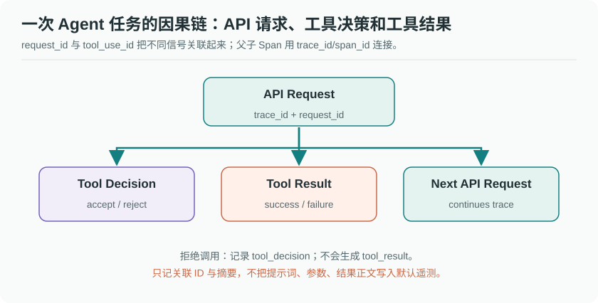
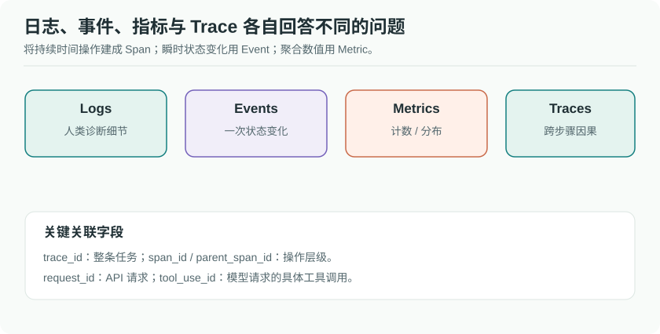

Agent Observability：事件关联、Token 账本与隐私边界
以 OpenTelemetry 为基础，解释 API、工具与权限事件如何关联，如何区分 Span/Event/Metric，以及如何在不采集原始机密的前提下诊断 Agent 故障。
Agent Debugging 的对象不是一条请求，而是一条因果链
一个用户请求可能触发多轮模型调用、多个工具、权限检查、子代理、压缩和重试。若只记录最后的错误文本，就无法回答：哪个模型请求产生了这个工具调用？工具是否真正运行？权限是否拒绝？失败发生在模型端还是工具端？后续请求是否看到了对应的工具结果？
因此需要将可观测性从“多打几行 print”升级为可关联的事件模型。先定义一次任务的 trace_id，再用 span_id 与 parent_span_id 组织耗时操作；API 请求用 request_id 关联模型响应，具体工具调用用 tool_use_id 关联决策与结果。

Logs、Events、Metrics 与 Traces 不是四种日志格式
日志适合解释某次具体异常；事件描述某个瞬时状态变化；指标聚合大量运行数据；Trace/Span 描述具有开始和结束边界的操作及其父子关系。OpenTelemetry 建议：有持续时间和明确边界的操作使用 Span；某个时刻发生的状态变化使用 Event；计数与分布则使用 Metric。

例如一次 API 调用可以是 Span，模型返回一个 tool_use 是事件或子 Span，工具实际运行是另一个子 Span，权限拒绝则是一个独立事件。不要为了“日志全面”而把所有消息全文塞进每个信号。
Claude Code 公开遥测：哪些信号可以使用
Claude Code 的 Monitoring 文档公开了 OpenTelemetry Metrics、Events 与 Beta Traces 的配置和字段。Token counter 按 input、output、cacheRead、cacheCreation 分别计数；其中 input 不包含缓存读取和写入的 Token，分析总输入时应把三类输入分别展示或正确求和。
工具结果事件 claude_code.tool_result 仅在工具执行完成时记录；被拒绝的调用不会生成 tool_result，而会出现在 tool decision 事件中。request_id、tool_use_id 等字段可用于跨事件关联。部分字段的可用性带有版本要求，仪表盘应记录 Claude Code 版本，避免升级后把字段变化误判为产品行为变化。
遥测的默认原则：记录足够诊断的信息，不记录原始机密
Prompt、模型响应、工具参数、工具结果、文件路径和 MCP 返回内容都可能包含源代码、个人信息、访问令牌或业务机密。Claude Code 文档中的部分内容字段默认会被隐藏；开启 OTEL_LOG_USER_PROMPTS 或 OTEL_LOG_TOOL_DETAILS 会改变采集的数据敏感度。是否开启应由组织的数据治理与保留策略决定，而不是为了“日志更详细”默认全量采集。
推荐默认只记录模型 ID、Token 数、延迟、工具名、结果大小、错误类别、请求关联 ID 和权限决策来源。高基数 ID 可以放在 Trace/Event 中关联，不要直接作为 Metric 标签。对于错误信息，优先保留稳定的 error_type，不要把整段 stderr 或 HTTP Header 当作指标维度。
不要通过修改 CLI 安装文件抓取通信来做常规监控
第三方实验工具可能需要 monkey-patch 安装后的客户端文件，容易破坏升级、引入隐私风险，也不等于官方支持的遥测 API。生产环境优先使用官方 OpenTelemetry 配置与受控导出器。
用一个最小事件账本验证关联关系
examples/agent_observability.py 实现一个严格字段白名单的离线事件账本。它只接收短 ID、模型标签、Token 数、工具名、成功状态、持续时间和错误类别；提示词、参数、结果正文等未知字段会被丢弃。
trace.record(
trace_id="task-1", span_id="tool-1", parent_span_id="req-1",
name="tool.result", timestamp_ms=30,
attributes={
"request_id": "req-1", "tool_use_id": "call-1",
"tool_name": "Read", "success": True,
"duration_ms": 12, "result_bytes": 4096,
},
)
print(trace.summary())该代码不是 OpenTelemetry SDK，也不会采集真实 Claude Code 会话。它演示关联、字段白名单、缓存 Token 分账和工具成功/失败计数的测试不变量。
排查工具调用循环：先检查 ID 关联，再检查模型行为
- 确认模型响应中是否存在 tool_use block，以及每个 block 的
tool_use_id。 - 检查权限决策是否为 accept、ask 或 reject；被拒绝的工具不应有成功执行 Span。
- 检查每个已执行调用是否有且仅有匹配的 tool_result，并使用同一调用 ID。
- 检查工具失败结果是否被正确回传，而不是在序列化时被丢弃。
- 检查下一次 API 请求的
request_id与消息链，确认模型实际收到的是哪个工具结果。
同一工具重复执行不必然是模型循环；也可能是工具结果未正确关联、结果太大被截断、重试策略缺乏幂等键，或外部状态没有发生变化。
测试与运营指标
运行 python3 -m unittest examples.test_agent_observability -v。测试覆盖 API 与工具事件关联、拒绝与执行事件分离、敏感字段白名单、重复 Span ID、Token 分类和压缩前后 Token 不变量。
运营看板建议展示：每任务模型请求数、Token 分类、工具调用/拒绝/失败数、P50/P95 延迟、重试耗尽、子代理成本归因、权限拒绝率、任务验收通过率。指标必须有定义、分母和时间窗口；不要只看平均值，也不要把“被拒绝的危险操作”统计成工具执行失败。
tool.decision 事件与一个 tool.result 事件的关联校验，模拟同一个 tool_use_id 被错误挂到另一个 request_id 时的报警。参考资料
- Claude Code Monitoring — OTel 指标、事件、关联字段、Token counter 和敏感字段控制
- Claude Code Hooks — Hook 输入、事件、执行结果与错误路径
- OpenTelemetry Events — Event 与 Span 的使用边界
- OpenTelemetry GenAI attributes — GenAI 工具与 Token 属性及敏感数据提示
- OpenTelemetry tracing conventions — Trace / Span 关联和语义